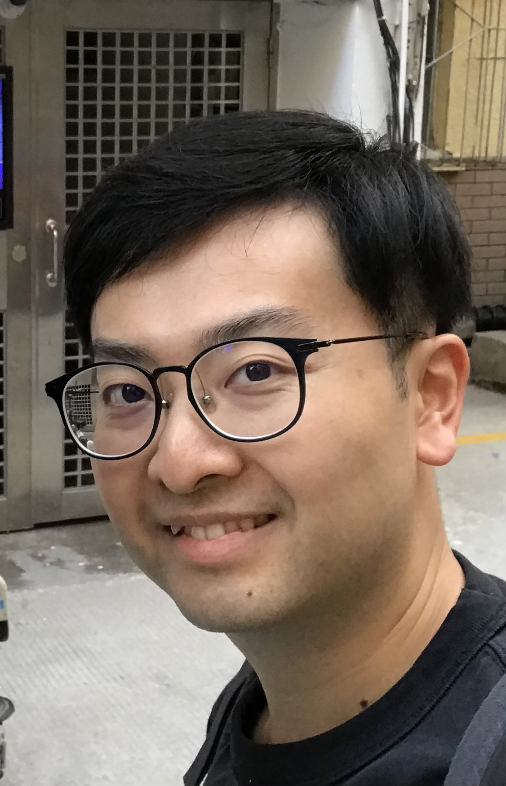

My Resume
Yanchi Lo

Summary
I am a creative and hardworking individual with experience in media and communication.
Education
- Bachelor of Arts, Cultural Studies - The Chinese University of Hong Kong
Work Experience
- Director － Holden Creative
Oct 2020 - Now
- Creative process of video production projects
- Communication with various clients such as NGOs, government departments, etc
- Project Manager - St. James' Settlement
June 2019 - Oct 2020
- Planning and developing the project 656carer.com
- Communication with different stakeholders
Skills
- Photography and Videography:🤌🏻🤌🏻🤌🏻🤌🏻🤌🏻
- Adobe Premiere Pro:🤌🏻🤌🏻🤌🏻🤌🏻
- Adobe Photoshop:🤌🏻🤌🏻🤌🏻🤌🏻
- Visual Studio:🤌🏻
Languages
- English:💪🏻💪🏻💪🏻💪🏻
- Mandarin:💪🏻💪🏻💪🏻💪🏻
- Cantonese:💪🏻💪🏻💪🏻💪🏻💪🏻
Others
My Hobbies
Contact Me